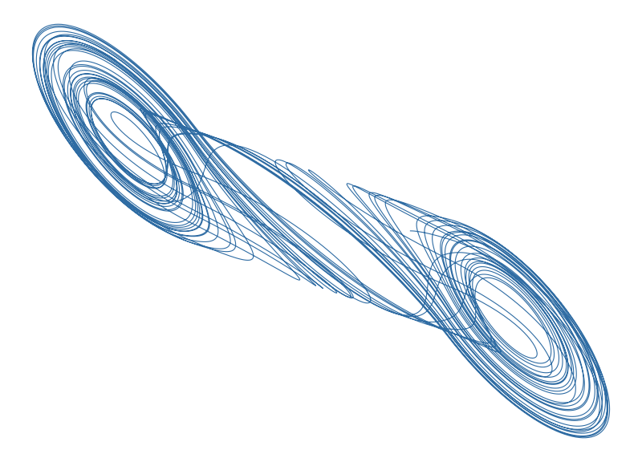
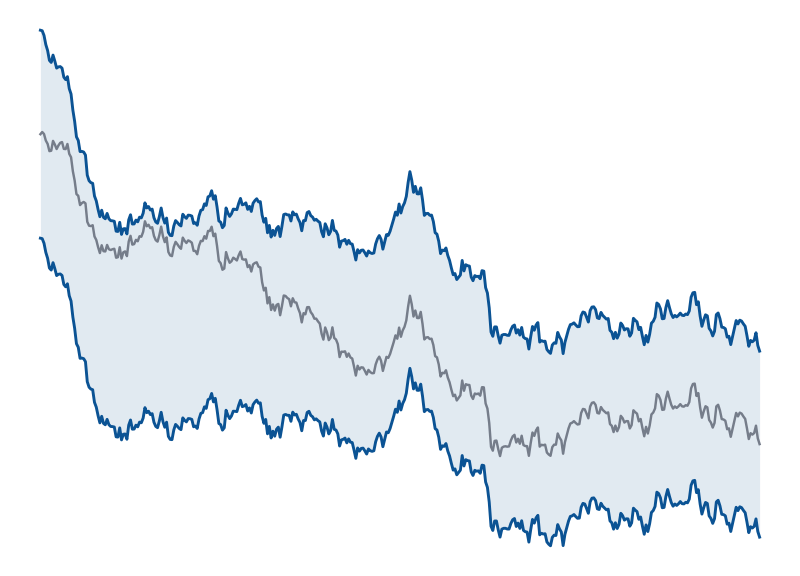

Chua-Circuit
Numerical and analytical study of the Chua circuit's chaotic dynamics. Studies equilibrium points and local stability via linearization, plus Runge-Kutta, Taylor, and Adams-Bashforth/Moulton integrators compared by truncation error.
Python · SageMath
Code

as-mm-monte-carlo
Monte Carlo backtester for an Avellaneda-Stoikov market maker. An algorithm that profits from the small gap between buy and sell prices. Tests whether adjusting those prices based on how much you're currently holding helps limit losses when the market swings, through thousands of simulated runs.
Python · NumPy · Hypothesis
Code